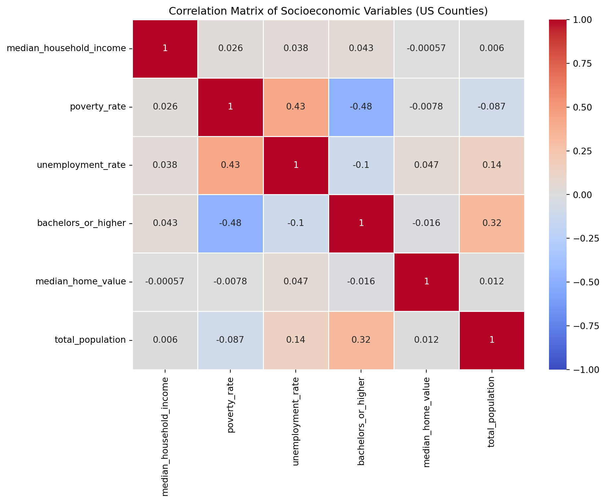
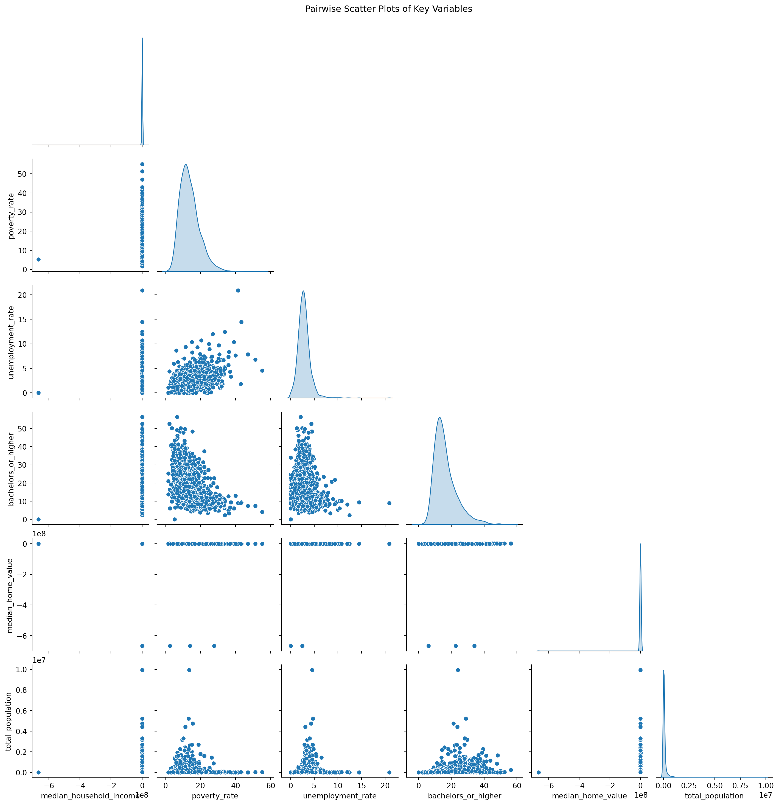

Code
import pandas as pd
import seaborn as sns
import matplotlib.pyplot as plt
import numpy as np
from dotenv import load_dotenv
import os
load_dotenv()
df = pd.read_csv("data/raw/census_county_data_2022.csv")
print(f"Loaded {df.shape[0]:,} counties")
df.head()
key_vars = ['median_household_income', 'poverty_rate', 'unemployment_rate',
'bachelors_or_higher', 'median_home_value', 'total_population']
print(df[key_vars].describe().round(2))
corr = df[key_vars].corr()
plt.figure(figsize=(10, 8))
sns.heatmap(corr, annot=True, cmap="coolwarm", center=0, vmin=-1, vmax=1, linewidths=0.5)
plt.title('Correlation Matrix of Socioeconomic Variables (US Counties)')
plt.tight_layout()
plt.savefig('outputs/figures/correlation_heatmap.png', dpi=300)
plt.show()
sns.pairplot(df[key_vars].sample(min(5000, len(df))), diag_kind='kde', corner=True)
plt.suptitle("Pairwise Scatter Plots of Key Variables", y=1.02)
plt.savefig('outputs/figures/pairplot.png', dpi=300)
plt.show()Loaded 3,143 counties
median_household_income poverty_rate unemployment_rate \
count 3.143000e+03 3143.00 3143.00
mean -1.488320e+05 13.81 2.80
std 1.189264e+07 5.70 1.30
min -6.666667e+08 1.60 0.00
25% 5.254300e+04 9.70 2.02
50% 6.092400e+04 12.95 2.70
75% 7.060200e+04 16.78 3.39
max 1.704630e+05 55.10 20.87
bachelors_or_higher median_home_value total_population
count 3143.00 3.143000e+03 3143.00
mean 16.25 -4.409314e+05 105131.09
std 6.99 2.059654e+07 333693.15
min 0.00 -6.666667e+08 50.00
25% 11.48 1.210000e+05 10832.50
50% 14.59 1.613000e+05 25763.00
75% 19.37 2.295500e+05 68058.50
max 56.35 1.441300e+06 9936690.00 
